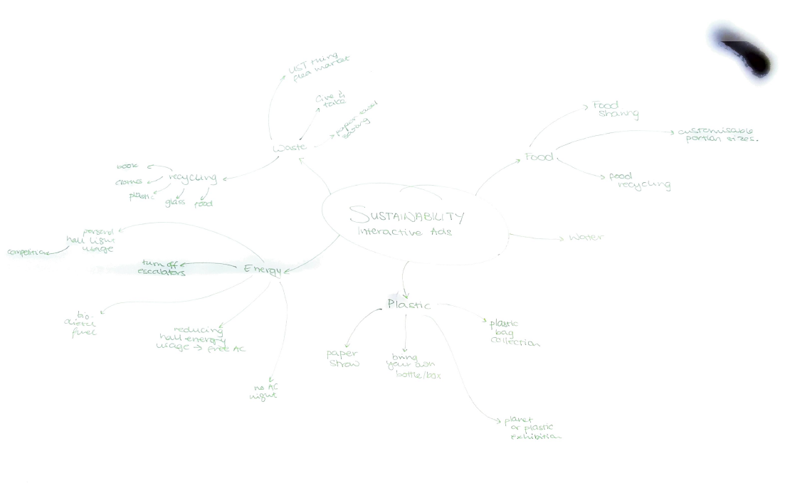
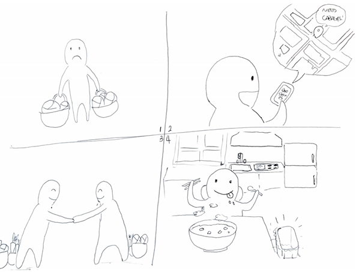
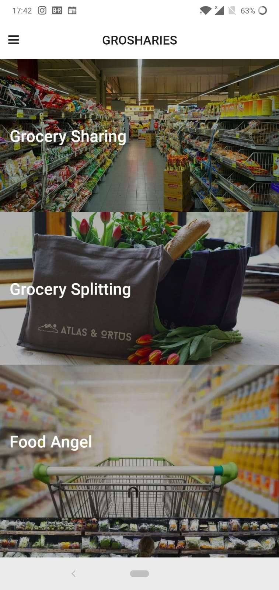

HCI Project 1
Report
Project: Grosharies Group: Basketcase
Brainstorming
Our group sat down and tried to list as much existing projects or topics that is related to sustainability projects. As a group that loves food, we decided to choose reducing foodwaste as our problem to tackle.Suprsingly, there were many projects which were school driven.
Existing Projects
- In some Halls like TKO, there are food sharing cabinets where student could put preserved/canned intems and donate them to other people. This project however is limited to preserved goods, and doesn't show what items are currently on display.
- In LG7 and LG1 canteen, there are options to order with less rice with a 1 HKD discount. This however limits the option only to rice, and not on other items.
- HKUST also had an bring a luncbox today campaign, but not everyone had the time or resource to bring a lunchbox to campus.
Designs
After discussing about different ways to reduce food waste, we tried to focus on groups that cooked. As a student cook myself, I always had the problem where it is very awkward to portion my groceries. We had serveral designs, which one that I worked on, was grosharies, an app that allows sharing groceries much easier. I drew this storyboard, and went around to ask for opinions. The feedback was mostly positive, but had concerns in security.
Grosharies
In the end, we chose the grosharies as our final idea as it had the most realistic chance, and could benefit far more than just UST students. We have agreed that the core functionality would be a intuitive interface to allow people with excess groceries to share, and buyers to locate and identify the goods quickly and easily. Isshan kindly have implementated the app as a prototype, which looked briliant!
Reflection
There were a few lessons I learnt through this project.
- It is important to identify the key requirements of the project and do a sanity check often. We were focused too much on providing a work solution, when we should have given equal attnetion to the novelty interaction side of the project. When we realized it, we were almost at the end of the project.
- During the design phase, we had a debate on whether to focus all our group's effort on each alternate design or each work on seperate designs. This was exactly the parallel and serial design process. I've learnt that in a prototype creation, parallel works best.
- More time should be focused on the final product. During the project, we had an 1:1 time investment on the alternate design and the final design. I think the prototype phase should be much quicker, with a workload distribution of 3:7.